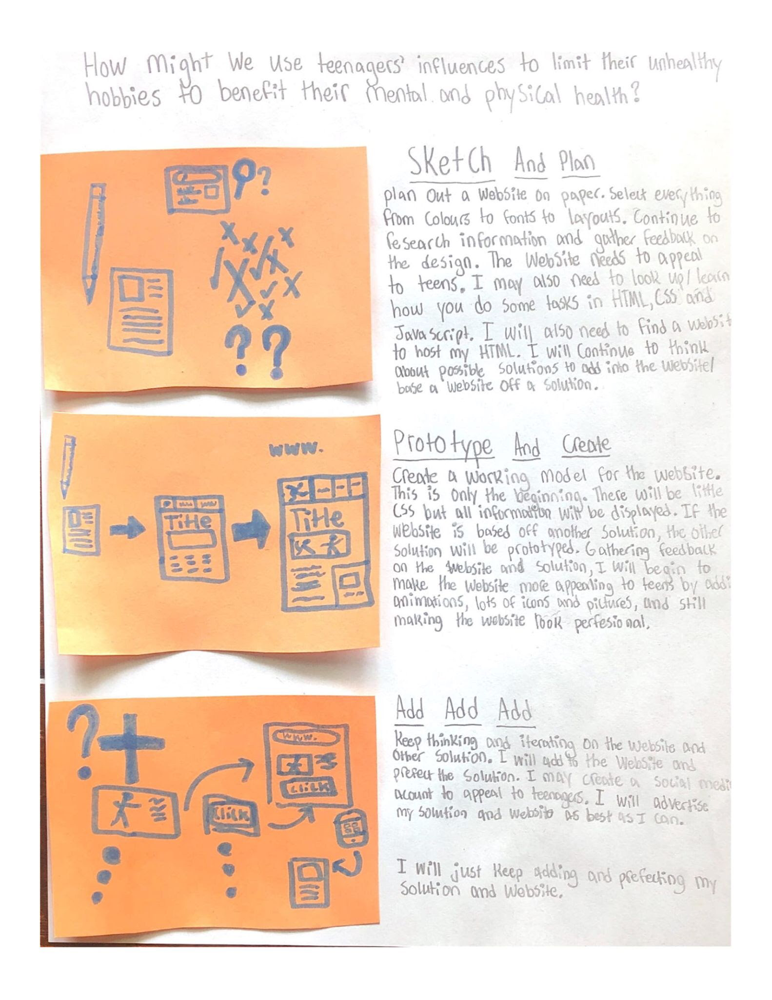

LIMIT
THE
SCREENS
“Sometimes you have to disconnect to stay connected. Remember the old days when you had eye contact during a conversation? When everyone wasn’t looking down at a device in their hands? We’ve become so focused on that tiny screen that we forget the big picture, the people right in front of us.”
The Average Amount Of Screen Time Per Day Is 7 Hours
Lets say that you maintain that average throughout your whole life
You would spend more than 209,781 hours onscreen
More than 8,740 days onscreen
almost 24 years onscreen
That's like 43.75% of your waking hours onscreen
In that time, you could master more than 20 skills
My Process
Like all good thing, this project was years in the making. My journey through PEAC has introduced so many opportunities to challenge my thinking and explore the design thinking process
Self-Discovery
I started with exploring my passions, values, and motivations to find a project worthy to pursue.
Eventually, I decided to focus on the topic of health hobbies. I thought that I could make a quick Google Site that outlines the benefits of healthy hobbies and how to find them. However, that’s not what PEAC is about.
Empathize
In this phase, you work to fully understand your user (the person who you are trying to help).
I started by doing a lot of research. Here are my key findings:
- 20.25% of people don’t have a hobby
- Teens who don’t spend any time doing extracurricular activities are:
- 57% more likely to drop out of high school
- 49% more likely to use drugs during their high school years
- 37% more likely to become teen parents during their high school years
- 35% more likely to smoke cigarettes during their high school years
- 27% more likely to get arrested during their high school years
- Engaging in enjoyable leisurely activities:
- Lowers blood pressure
- Lowers cholesterol
- Lowers waist circumference
- Lower body mass index
- 34% less stressed and 18% less sad during the activities
Then I organized the research into an infographic:
Then I sent out a survey to collect information from my end-users. My key findings include:
- 100% of participants had healthy hobbies
- They are motivated by positive influences, including family and friends
- They care about their mental, physical, and future health
However, I also found out that 100% of participants had unhealthy hobbies.This is where my project shifted. I realized that healthy and unhealthy hobbies go hand in hand: limit one and the other increases.
Define
In this phase, you work to analyze your empathy research and discover what your problem really is.
I started ny capitalizing on my survey. I created a user persona to demonstrate who my user is. This will help me create a user-centered solution.
(my drawing representation is also spot on)
Then I created my How Might We Question. This will be the problem I will try to solve:
HOW MIGHT WE… Use teenagers’ influences to limit their unhealthy hobbies to benefit their mental and physical health?
Then I made it better:
HOW MIGHT WE… Use teenagers’ societal influences, and interests to limit their unhealthy hobbies to benefit their mental and physical health?
Ideate
In this phase, you work to think of as many possible solutions to your problem as possible. You will choose one to move forward with.
So, I started by brainstorming. Thinking about absurd solutions. Out of the box ideation. Researching inside of the box: what’s been done, did it work, and why? But I also needed to focus on my user. It didn’t go the best…
Using the best idea I had, I created a story board. There are 3 sections to my plan.
Sketch and Plan:
- Use paper
- Plan out website
- Select colours, font and layouts
- Must appeal to teenagers
- Gather feedback on design
- Continue research
- Think of possible solutions to the problem. The website won’t do everything
Prototype And Create:
- Create a working model of the website
- There will be very little design/styling
- Make sure the website works and solves my problem
- Gather more feedback
- Gather feedback on design
- Begin on turning the prototype into a product
Add Add Add:
- Continue iterating on the website
- Perfect the solution to the problem
- Build a social media account to appeal to teenagers (advertising)
Meeting with Mr. Lowery
I had a meeting with Mr. Lowery (the mastermind behind PEAC) to discuss my project. We agreed that my topic was too broad and would need narrowed down. So I decided to change my project to screentime.
I could still use my previous research and user-planning because excess screentime usage is an unhealthy hobby. And to fix the problem, you can introduce healthy hobbies to do instead. But I would need to go back and redo some design thinking phases.
With my newfound topic, I decided that I would need to do a lot more research. Following that, I created an infographic to summarize my scrutiny.
My Initiative
Sticking to my website idea, I will design a website to host my solution and deliver other necessary information, resources, and interactive fun.
The base of my solution consists of a challenge. You will be able to take this challenge over a verity of time ranges, such as 4 days, 1 week, 2 weeks, or 1 month.
The rules of the challenge haven’t been ironed out (they will undergo lots of testing). However, currently they consist of the following:
- You cannot spend time on a screen 1 hour before going asleep or 30 minutes after waking up
- You must try to challenge someone else to complete it with you (unless someone has challenged yo)
- Your goal is to half your average screentime in the time range (the longer time ranges will have you gradually decrease screentime and possible quarter it)
- Motivate each other to continue the challenge and beet it together! (or try to do better than your opponent)
“Technology: ‘the knack of so arranging the world that we don’t have to experience it.'”
This challenge is designed to promote healthy hobbies (like not disrupting your sleep cycle) and explore a healthier lifestyle. After completing, you will feel better emotionally, mentally, and physically. You will be able to continue to maintain a lower screentime (even if it’s just 1 hour or 30 minutes less). Hopefully, you will challenge someone else and spread your success!
The website will contain many more features. There will be a printable certificate on completion of the challenge as a reminder to their success and achievement. Additionally, after the challenge, their will be a survey to gather feedback and offer congratulations. I will provide offline activities in an Activity Glossary. These activities can range from 1 person to group fun and consist of leisure to active and group to competitive activities. The goal is to introduce healthy hobbies to do instead of going on your phone constantly. The Activity Glossary will be available on my website and as a printable (so you don’t need to use screentime to find something to do).
I also want to include motivational stories of users who have taken the challenge and created a healthier, happier self.
I know that everyone can benefit from a decreased screentime. Will you take the step to a healthier lifestyle?